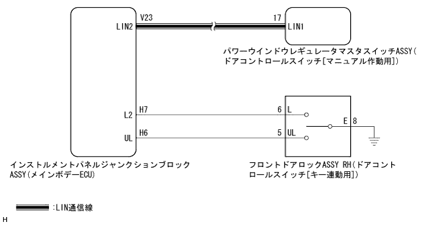
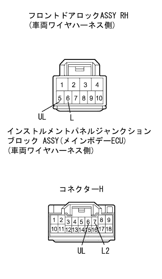

Power Door Lock System All Doors Do Not Lock and Unlock with Master Switch or Key-linked Operation |

| Step 1 | Inspect Fuse |
Using SST (Toyota electrical tester), measure the resistance of the fuse.
| Inspection Fuse | Condition | Standard |
|---|---|---|
| DOOR | Always | Below 1 Ω |
|
| ||||
| OK | |
| Step 2 | Operation Check |
Operate the door lock switch of the master switch and check whether manual operation is normal.
| Result | Proceed to |
|---|---|
| If lock and unlock operation cannot be performed manually | A |
| If lock and unlock operation cannot be performed by driver side key-linked operation | B |
| If neither operation can be performed | C |
|
| ||||
|
| ||||
| A | |
| Step 3 | Read TaSCAN Data |
ECU Data Monitor
Using SST (TaSCAN), perform the data monitor of the power window regulator master switch assembly.
| Item Name [Symbol] | Item Description/Display Range | Standard Value | Remarks |
|---|---|---|---|
| D-Seat Side Door Lock SW (Lock) [MDRS] | Driver side manual door lock switch status Display range: OFF-ON | OFF: Driver side manual door lock switch free ON: Driver side manual door lock switch locked | - |
| D-Seat Side Door Lock SW (Unlock) [MDUR] | Driver side manual door lock switch status Display range: OFF-ON | OFF: Driver side manual door lock switch free ON: Driver side manual door lock switch unlocked | - |
|
| ||||
| OK | ||
| ||
| Step 4 | Read TaSCAN Data |
ECU Data Monitor
Using SST (TaSCAN), perform the data monitor of the instrument panel junction block assembly (main body ECU).
| Item Name [Symbol] | Item Description/Display Range | Standard Value | Remarks |
|---|---|---|---|
| Door Key Linked Lock SW [L2] | Driver door key linked switch status Display range: OFF-ON | OFF: Driver door key linked switch neutral ON: Driver door key linked switch locked | - |
| Door Key Linked Unlock SW [UL2] | Driver door key linked switch status Display range: OFF-ON | OFF: Driver door key linked switch neutral ON: Driver door key linked switch unlocked | - |
|
| ||||
| OK | ||
| ||
| Step 5 | Inspect Wire Harness and Connector (Front Door Lock Assembly RH - Main Body ECU (Instrument Panel Junction Block Assembly)) |
 |
Disconnect the front door lock assembly RH connector and connector H of the instrument panel junction block assembly (main body ECU).
Using SST (Toyota electrical tester), measure the resistance. (For Terminals of ECU, see)
| Inspection Terminal (Symbol) (Door Lock Assembly - Main Body ECU) | Condition | Standard |
|---|---|---|
| 6(L) - H7(L2) | Always | Below 1 Ω |
| 5(UL) - H6(UL) | Always | Below 1 Ω |
|
| ||||
| OK | ||
| ||